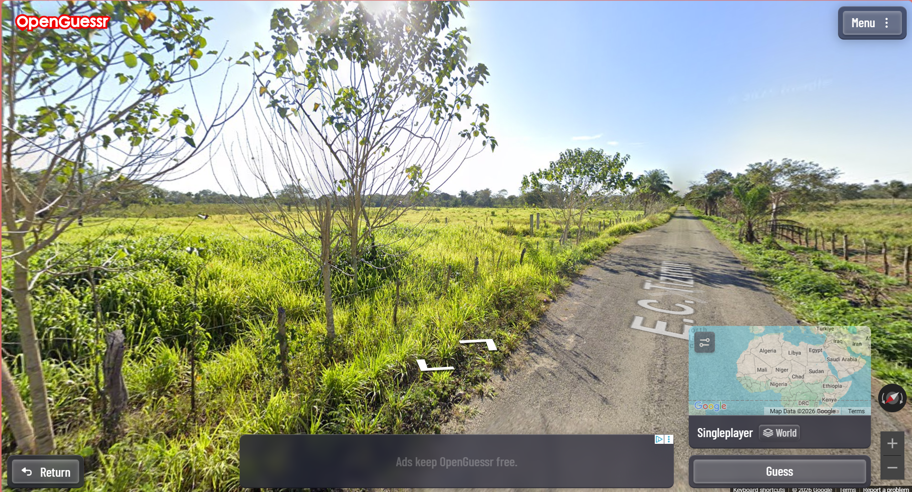
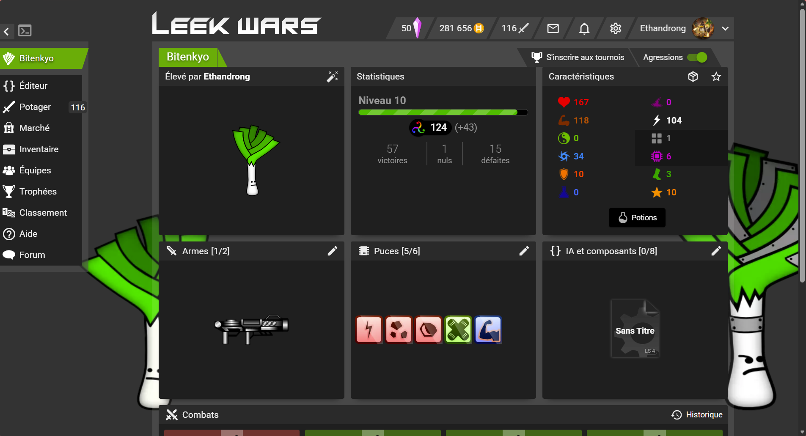
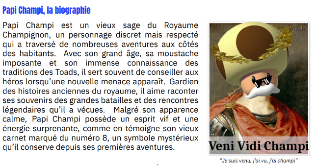
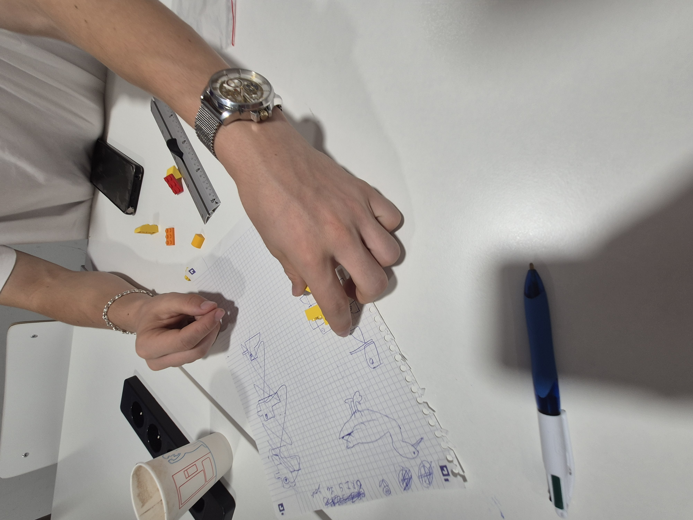
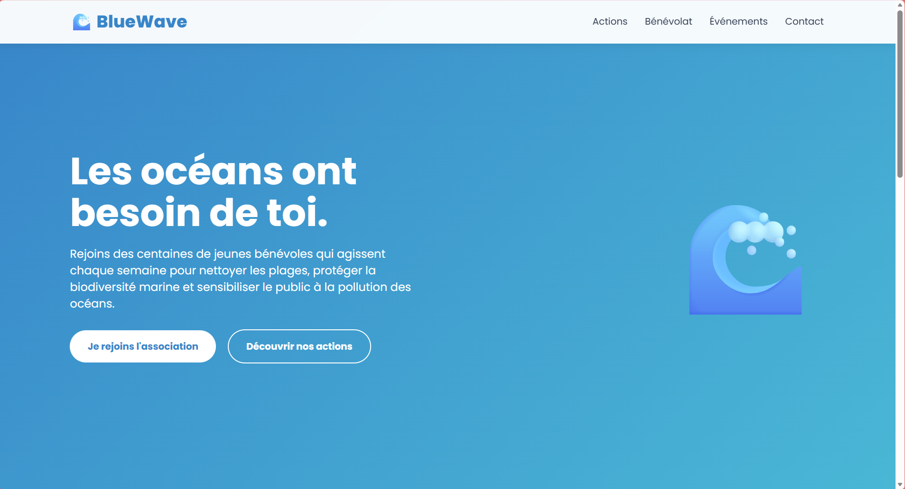
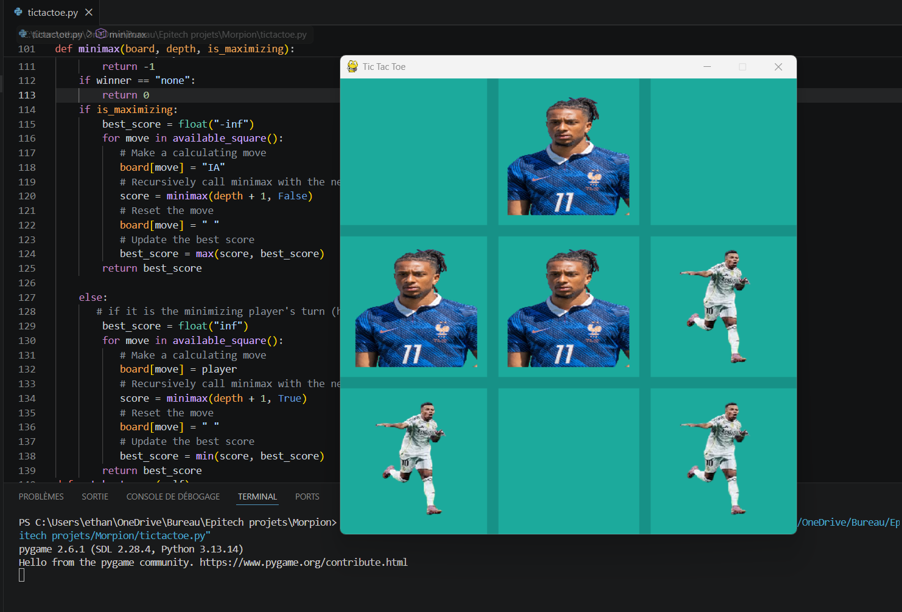
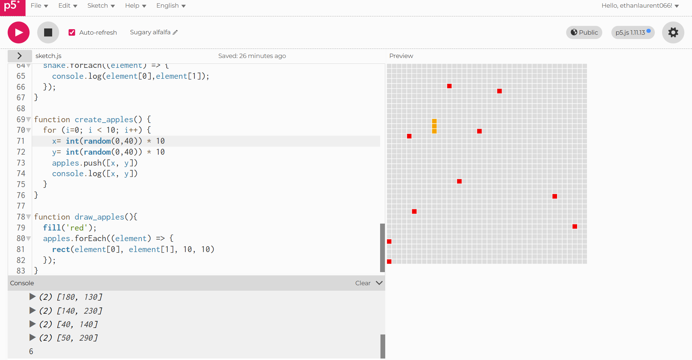
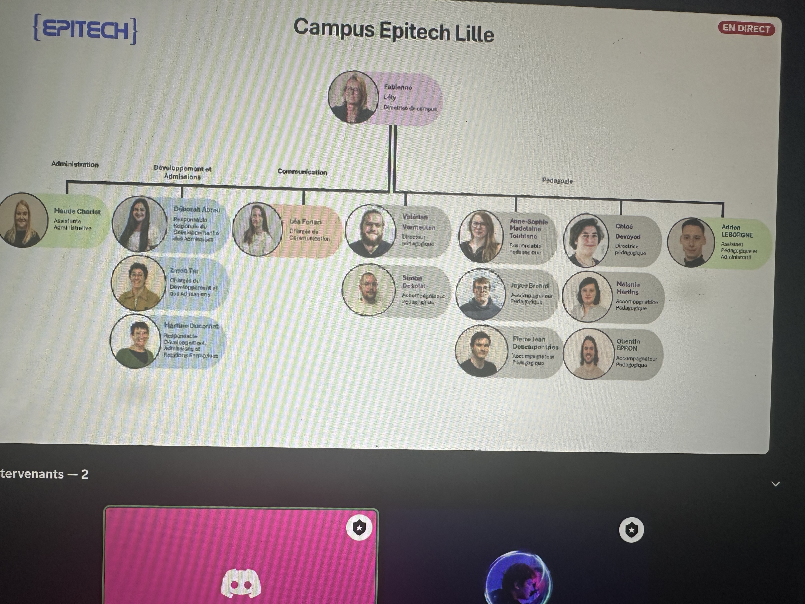
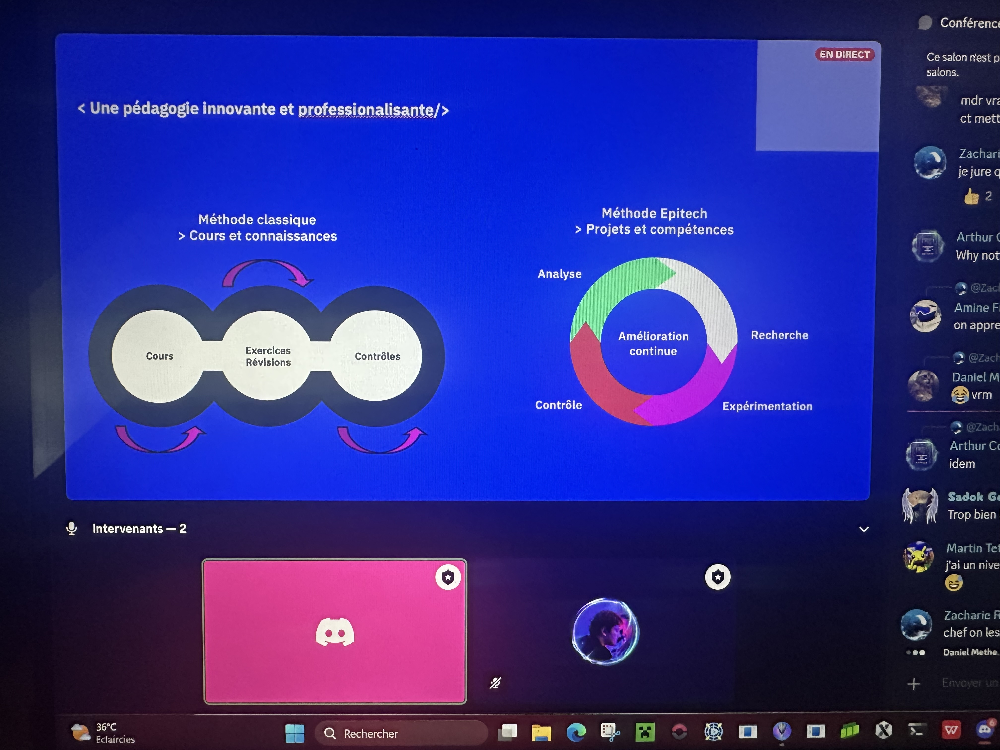
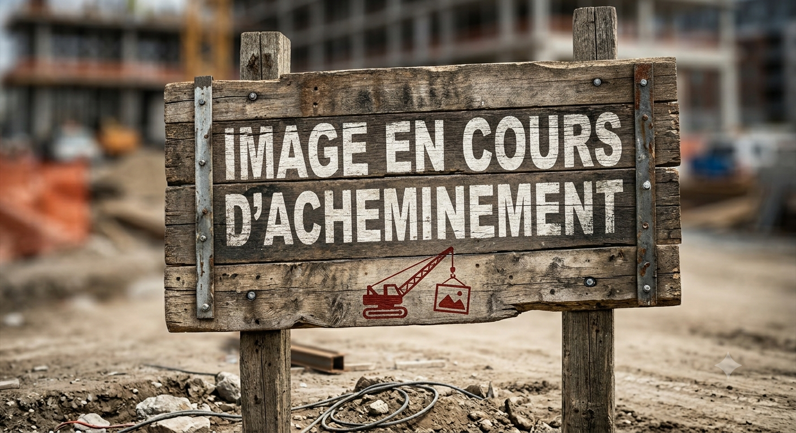

A propos de moi :
Si jamais vous ne le savez pas encore, je m'appelle Ethan.
Dans la vie j'adore par dessus tout le football. J'aime aussi beaucoup coder, lire, et les grasses matinées.
J'ai beaucoup de qualité et très peu de défauts. Je suis beau, intelligent, sportif, et surtout, surtout, très humble.
Je ne l'ai pas mentionné mais je pense que vous l'avez vu : j'aime aussi faire de l'humour.
En réalité, j'aime énormement aider et faire plaisir aux gens. Pour moi la meilleure sensation est de faire sourir les personnes.
Malheureusement, sans rire, j'ai beaucoup de defauts, comme la fainéantise, qui est mon plus gros.
D'ailleurs si vous avez le temps, un easter egg est caché dans cette page, vous pouvez le chercher.

Semaine 1
lundi
Matinée
La première matinée débute avec un IceBreaker pour apprendre à nous connaître, puis, à l'installation des applications pour le reste de la semaine
Après-midi
Nous débutons le projet du stage : le Portfolio. Cette après-midi, nous sommes concentrés sur la base en HTML.
mardi
Matinée
A partir d'aujourd'hui, les matinées commenceront par une conference. Cette fois, c'est sur la cybersécurité avec Gabriel. Ensuite on doit avancer sur notre Portfolio avec le CSS.

Après-midi
Nous commencons par un OpenGuessr pour ensuite, continuer sur CTF, où il faut decrypter des codes cryptés grâce à des clés de dechiffrages qu'on doit aussi trouver.


mercredi
Matinée
La conférence de la journée porte sur l'IA et les futurs métiers, impactés ou non par l'IA. Ensuite nous jouons à Leek Wars, un jeu dans lequel on doit coder l'IA d'un poireau pour qu'il attaque d'autres poireaux.

Après-midi
AU SECOURS PAPI CHAMPI A ETE ENLEVE : nous devons décrypter son message pour le retrouver. Pour cela nous devons coder un decrypteur. Ensuite nous devons utiliser la turtle de Python pour dessiner la fleur de feu de papi champi pour le sauver.

jeudi
Matinée
la conférence de ce jeudi porte sur "apprendre à apprendre" avec un kahoot qui montre les différentes methodes d'apprentissage. Ensuite nous faisons des légos de canards. L'objectif est de montrer que l'on peut faire beaucoup avec peu.

Après-midi
Nous faisons de l'Arduino. C'est donc reproduire le jeu "Simon" en codant une aparition aléatoire de Leds et un bouton.

vendredi : Télétravail
Matinée
La conférence est donc en télétravail. On doit créer des site par IA. J'ai utilisé ChatGPT pour le premier et Gemini pour le second.


Après-midi
Comme on est en télétravail, on ne peut pas faire d'activité. On avance donc sur notre Portfolio.
Semaine 2
lundi
Matinée
Cette niuvelle semaine commence par une conférence sur les métiers dans l'informatique et leurs rapports avec l'IA. Ensuite, la seconde activité est la presentation de projets d'étudiants comme un groupe qui a recréé Mario Bros.
Après-midi
L'aprem est plutôt classique car nous avancons encore sur notre Portfolio
mardi
Matinée
Pour cette conférence, un employé de Google est venu. Il est là pour nous expliquer l'IA de Google et les infrastructures du géant mondial, comme les data centers. Ensuite, pour l'activité, les ambassadeurs nous donnent 15 objets et on doit les classer du plus utile au moins utile si jamais on devait survivre et faire 300km sur la lune
Après-midi
Pour l'après-midi, on doit recréer un morpion et coder une IA pour jouer avec nous

mercredi
Matinée
Pour cette matinée, on doit enchainer deux conférence : la première est sur les métiers dans une entreprise informatique, et la deuxième sur les métiers nécessaires pour créer un jeu video (sound designer, developpeur...)
Après-midi
Durant cette après-midi nous travaillons sur un Snake en Java Script

jeudi : TELETRAVAIL
Matinée
Pour cette matinée, nous sommes assez libres. On peut faire ce qu'on veut. Je choisis d'avancer sur mon Portfolio comme la plupart des personnes.
Après-midi
Pour cette après-midi, Deborah, la gérante du stage, nous fait une présentation sur les études à Epitech, les skillq nécessaires et les programes. A la suite de cette conférence, nous sommes libres. Je choisis de fignoler on portofolio.


vendredi
